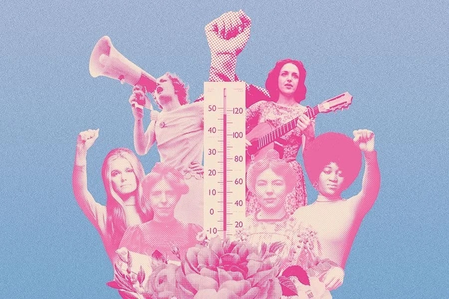

Stories of what girls and women are told to put up with, and the courage it takes to say it out loud. Real accounts appear here only with the contributor's permission.

Ishaanvi Dhariwal, founder. Two men on a motorbike, a school bus, and what I was told afterwards.
It started in 2022, on the bus ride home from school. Two men on motorbikes began chasing the bus, and then followed me all the way to my house, recording me with their phones. Inside the bus, the other children laughed and mocked me. They asked me to pose for the camera.
I panicked and called my mother. She told me this was common, that I needed to be strong, not panic, and give it back to them. My father blamed me instead: “You must have been looking outside the window.”
SafeSteps is what I built because no girl should be told that this is normal, or that it is her fault.
Shanti. My daughter ran away so she would not be married, and I was beaten for it.
My daughter was sixteen. Her marriage had been fixed to a man almost twice her age, and she did not want it. She told me, and I did not know what to say, because no one had ever asked me what I wanted.
One night she left. In the morning my husband and his father pulled me out into the lane and beat me, in front of the whole neighbourhood, asking where she had gone. I did not know. People came out to watch. Some looked away. Nobody stepped in.
I still do not know where my daughter is. I am not angry with her. Every day I hope she is somewhere with a book in her hand, where no one is deciding her life for her.
— Shanti
Preeti. I stopped raising my hand in class so nobody would look at me.
In class nine, a boy from the senior class followed me to the gate every day and passed comments. I told my mother. She said, “Ignore it. If you make noise, people will talk, and who will marry you?”
So I stopped speaking. Then I stopped raising my hand in class, because I did not want anyone looking at me. My marks fell. Nobody asked why.
I am telling you this so that some other girl knows it was never because she was too much.
— Preeti
Titu. My brother goes to school. I stay home.
My brother goes to school. I stay home, because the road to my school has men who stare, and my mother says staying home is for my safety.
I help her with the cooking. I finish my chores early, and then I draw trees on the back of old papers. I like drawing the roots best, because roots do not have to go anywhere.
I wonder why it is always me who stays. Nobody has told the men to stay home.
— Titu
Your story could be the thing that helps someone else keep going. You can write as "Anonymous". We will never publish your name or story without your clear permission.